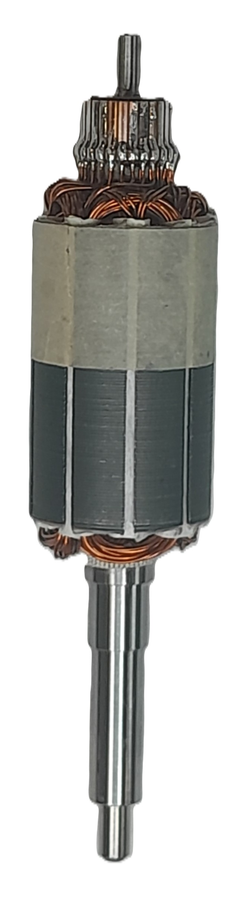

Stage Instrumentation & Industrialisation

Stage de fin d'études réalisé chez Sécré Composants Électroniques (SCE) au sein du service Méthodes. Ma mission a porté sur la fiabilisation de lignes de production critiques et le déploiement de solutions de contrôle métrologique pour des clients majeurs (Airbus, Thales, MBDA).
🏭 Mission 1 : Optimisation de la ligne Induits
🔧 Refonte des Dossiers de Fabrication (DFI)
Pour pallier le manque de précision documentaire et les erreurs de montage, j'ai réécrit les DFI en intégrant des supports photos HD. Cette standardisation sécurise le savoir-faire de l'atelier.

📡 Mission 2 : Instrumentation et Analyse Fréquentielle
📊 Validation des transformateurs MIL-STD-1553
Mise en place d'un Analyseur de Réseau Vectoriel (VNA) pour valider la bande passante des composants de bus de données aéronautiques.

- Programmation des séquences de test automatisées.
- Garantie de l'intégrité du signal HF (norme défense).
🏷️ Mission 3 : Traçabilité et Maintenance
🖋️ Marquage Électrolytique Industriel
Réalisation de marquages indélébiles via le générateur Fremark E10. Ce procédé est indispensable pour la traçabilité des pièces aéronautiques.

⚙️ Maintenance et Support Voltech ATi
Intervention de diagnostic sur les testeurs automatiques de bobinage Voltech pour assurer la disponibilité du parc de contrôle Qualité.
- Localisation de pannes sur les matrices de tests.
- Remise en état des cordons de mesure et calibration.
Conclusion
Ce stage m'a permis de maîtriser des processus industriels complets, de l'analyse de terrain à la validation métrologique. J'ai également proposé des pistes de digitalisation pour améliorer la transmission du savoir-faire tout en respectant une démarche de sobriété numérique.